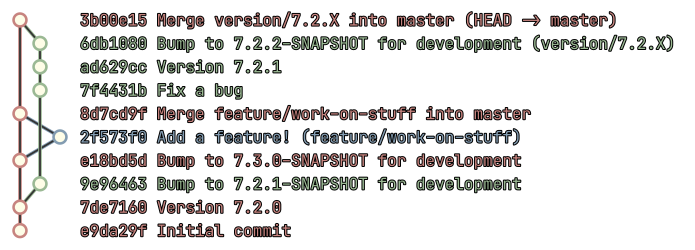

An alternative git management scheme.
While developing WorldEdit after 7.1.0, we quickly ran into a problem where the non-finalized features on the
master branch prevented us from releasing very important bug-fixes that are also on master.
We should really have been able to put out a 7.1.1, 7.1.2, etc. to provide easier access to these small but
necessary fixes, such as UTF-8 for localization and biome math.
To alleviate this issue, I propose a new system of branch management for WorldEdit. This derives from Git Flow and Git V.
The primary ideology of this new branch management system is to avoid being locked in to any version. We should never delay bug-fixes because we have a feature in the same branch, and we should never postpone minor features because we introduced breaking changes.
There are 6 types of branches:
master The main branch. It contains bug-fixes merged from version branches, and features merged from feature
branches.version/M.m.X - Version branches that contains bug-fixes for the features in version M.m.0.bugfix/* - Bug-fix branches. These are optional, but should be used for larger bug-fixes or things which need
approval. They are targeted to the version/M.m.X branch, not the master branch.feature/* - Feature branches. These are non-optional. They are targeted to the master branch, not the
version/M.m.X branches.master, as it is the
main branch.With this model, we can continue to release bug-fixes while still adding new features without much hassle.
Only two types of branches are published to Maven, master and version/M.m.X. Developers can choose the
appropriate branch based on their work.
If you've got a new bug-fix, it goes in the current version/M.m.X branch, or a new bugfix/* branch targeting the
version branch. If you've got a new feature, make a feature/* branch and PR it to master.
Besides the new rule for bug-fixes, not much changes here. If you need a bug-fix from a version/M.m.X branch, it may
be merged into master at any time for the price of one merge commit.
Any breaking changes should be avoided at all costs. If it is necessary to introduce breaking changes, or something has
been deprecated for over 6 months, a major version release may be triggered, but the actual breaking changes should
remain in a feature/* branch until we are ready to cut the release. Under no circumstances should a breaking change
remain in master for more than 24 hours without a major version release following it.
For the purposes of this document, a new Minecraft release is usually considered to be a bugfix, unless it requires us to introduce a new feature for some reason.
Assuming we are currently working on 7.2.P-SNAPSHOT / 7.3.0-SNAPSHOT (Q is the next patch version):
version/7.2.X changing the version to 7.2.P.7.2.P.version/7.2.X changing the version to 7.2.Q-SNAPSHOT.Assuming we are currently working on 7.1.P-SNAPSHOT / 7.2.0-SNAPSHOT:
version/7.1.X branch is merged into master and removed.master changing the version to 7.2.0.7.2.0.version/7.2.X branch is made from the tip of master.version/7.2.X changing its version to 7.2.1-SNAPSHOTmaster changing its version to 7.3.0-SNAPSHOT.This process is the same for a major version, except that the version number changes in the major part for releasing.
This is a special case, as we want to continue working in the same snapshot after these are dropped.
It is very similar to Major/Minor as they are always created for the master branch.
These versions should be formatted as M.m.P-tagN, where tag is either beta or rc, and N is at
least 1.
Assuming we are currently working on 7.1.P-SNAPSHOT / 7.2.0-SNAPSHOT, releasing 7.2.0-rc1:
version/7.1.X branch is merged into master but not removed!
master changing the version to 7.2.0-rc1.7.2.0-rc1.master changing its version to 7.2.0-SNAPSHOT.A simple example including both normal processes. 
One important part of merging any version/M.m.X branch into master, is that care must be taken not to overwrite
master's version with the version branch's version. This should result in a merge-conflict normally, just be sure to
pick master as the winner of the conflict in this case.
version/M.m.X into master create a lot of merge commits?
(That's all the questions I expected!)